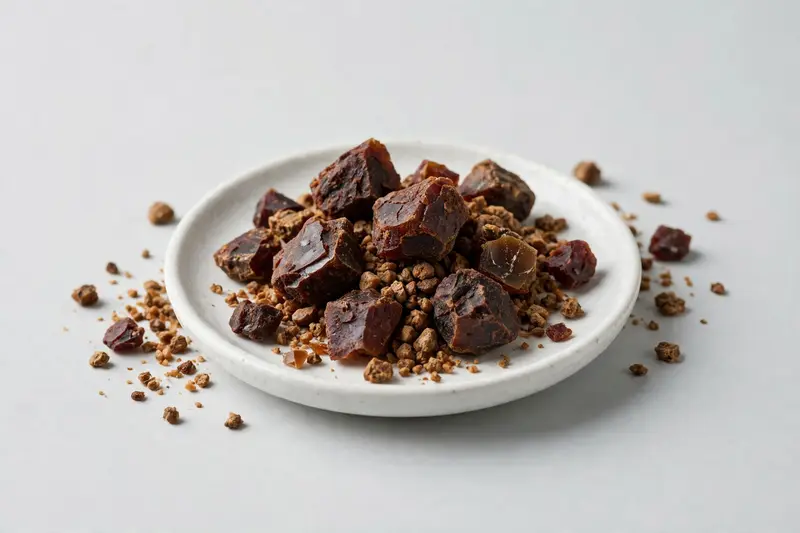

Myrrh extract — furanosesquiterpene grades for cosmetic and oral-care formulations.

Overview
Myrrh Extract is produced from the resin of Commiphora myrrha and is positioned around its furanosesquiterpene content. Buyers commonly request specific furanosesquiterpene grades, extract ratio and solvent. Demand is concentrated in cosmetic, oral-care and fragrance-related formulation development. As a trading company in Xi'an, we source through partner producers and confirm feasibility after receiving your target spec.
Specifications below reflect commonly requested options in the market — not a stock list. Share your target spec and we'll confirm exactly what we can supply, honestly.
| Specification | Details |
|---|---|
| Botanical identity | Commiphora myrrha resin extract |
| Source material | Resin |
| Marker compound | Commonly requested spec grades: furanosesquiterpene content; actual specs confirmed on inquiry |
| Appearance | Light brown to dark reddish-brown fine powder |
| Mesh size | Typically 80–100 mesh (confirm per inquiry) |
| Testing | COA/TDS arranged on request; scope agreed per your spec |
Applications
Documentation
We don't claim in-house labs or certifications we don't hold. COA and TDS documents can be arranged on request, and testing scope is agreed against your specification before supply.
FAQ
Related products
L-Citrulline
Key marker: 99%+
View specs →Bromelain (Ananas comosus)
Key marker: 2000-3000 GDU/g
View specs →Papain (Carica papaya)
Key marker: USP activity units
View specs →Boswellia carterii
Key marker: Boswellic Acid
View specs →Perilla frutescens
Key marker: Alpha-Linolenic Acid
View specs →Send your target spec and volumes — we'll respond with a tailored quotation.
Request a Quote